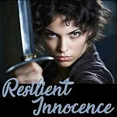
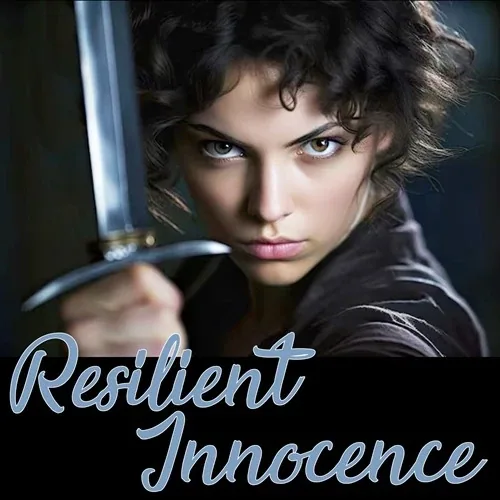
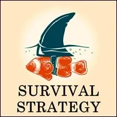
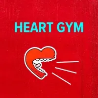

RESILIENT
INNOCENCE
- …
RESILIENT
INNOCENCE
- …

- # Resilient Innocence- How can I be more resilient? How can my innocence and vulnerability become resilient? How can I be open and also be in connection? The Resilient Innocence Practices given here help you add qualities and distinctions to your Being so that you can stay in your body and in the present, and yet remain open and full of creative aliveness. These are key skills for creative collaboration in groups and Teams. - Aliveness Emerges Through Resilient Innocence - ARE YOU BETTER AT BEING RESILIENT?- If you are better at being Resilient, then your Resilience may be running on automatic. You may be applying your techniques for being resilient unconsciously. Most likely this means you put your Survival Strategy first, up front, between you and everything and everyone else in the world. Then you cannot be Innocent. - You might have Contaminated your Adult Egostate with your Gremlin Egostate as a way of being super protected from the wildness of the world through your Gremlin's ability to betray, destroy, or confound other people's power, or you might have Contaminated your Adult Egostate with your Parent Egostate as a way of ridiculing, rule-binding, or commanding others so as to control them and keep it safe for you. - You might notice this by discovering your aloneness, isolation, single-fighter lone-wolf strategies at the center stage of your concerns in daily life. - ARE YOU BETTER AT BEING INNOCENT?- If you are better at being Innocent, then your Innocence may be running on automatic. This means you display and hide behind your 'Mask of Innocence' to everyone you meet and every situation that comes at you. Most likely this means you find yourself trying to manipulate others into rescuing you, or at least not hurting you because you are so powerless, confused, and weak. Then you cannot be Resilient. - You might have Contaminated your Adulth Egostate with your Child Egostate as a way of appearing harmless and defenseless. Then if the others do not care for you properly, if they do not meet your expectations of being cared for or made safe enough, then you can claim that they have betrayed you and go after them in the meanest ways imaginable to get your justified revenge. - You might notice this by ongoingly being in Low Drama Victim interactions, being left out, being left behind, feeling scared and angry about being unprotected and uncared for. - WALKING THE LINE OF RESILIENT INNOCENCE- If you truly consider not trying to be 100% Resilient, or not trying to be 100% Innocent... then where are you? Your defense strategy does not apply anymore. There you are, not locked into a plan, not commited to a particular self image that you can show to others as 'this is who I am'. Instead you are relating in the moment, you are relating according to the circumstances, situationally. How is that for you? - Why is it that way? - Does it seem like you must stay awake and alive? - Does it seem to be more frightening, less certain, demanding an increase of your own awareness and - attention? Yes? Perhaps it feels this way because it is really this way. Walking the ever-moving- Pathbetween Resilience on the one hand, and Innocence on the other hand, is the opposite of- Zombieism. Only you are responsible for and therefore aware of each step you take or don't take, each move you make or don't make, each detail you notice or cannot notice. Your way, therefore, includes increasing your capacity for- Noticing.- No one can Notice for you, no matter how much you may want them to remind you about what to Practice when and how, or how much you want them to warn you about what to watch out for or take care of. - On the other hand, no one can stop you from building your capacity to Notice! This is exciting, isn't it? - You are flying in a field rather than trying to follow a rule or walk a line. This is when - Flying Schoolcould come in handy.- Then you can Create without having to follow a menu. You can Discover without having to fit your discoveries onto what is already known. You are taking risks without automatically assuming you have to defend yourself from criticism. You get to start over in each moment, be alive in every breath, because you are at source for not knowing while at the same time being clear of your Path for how you got there where you are, and what your Purpose is. - RADICAL RESPONSIBILITY AND RESILIENT INNOCENCE- If navigating your own Resilient Innocence in any space is your responsibility - not only the spaces you personally Cavitate, Hold, and Navigate - then you are Radically Responsible for the way you are being. - What is the way of being Innocent Resiliently? - Connected yet not dependent. - Able to make Proposals yet free to decline offers. - Supported by the circumstances no matter what they are, because you choose which Story you apply to the circumstances. - Radically Relating as High Level Fun play, not as a Gremlin feeding ground. - RESILIENT INNOCENCE AND THE ARCHETYPAL DOMAINS- Spend a half-hour soon imagining that you are the Universe, and you are looking at the life of (put your name here...) so far as you have lived. What does the Universe feel about you? What does the Universe see about you that you do not see? What does the Universe see as your Potentials? Your true Purpose? Your Archetypal Lineage? - Write these observations from the Universe down in your - Beep! Book.- Notice how the Universe does not so much care about what you eat, how you dress, or the piddling Middle World concerns of your daily life. Notice how instead the Universe is more concerned with what you create for others and your village, your Path, your awareness of your own intentions and the Stands that you take, what you are stewarding for the benefit of Gaia and life on Earth. - In other words, the Universe cares about the way you interact with the - Archetypal Domains.- How do you interact with the Archetypal Domains? Through stabilizing in the Adult Egostate. In other words, through transforming your Gremlin, and through Decontaminating your Adult Egostate... - There is not way around these steps along the Path. Without doing Phase 1 of adulthood, you never get to Phase 2. - Resilient Innocence - Notes (very in progress, yet to be made into experiments)- - This is in some ways an attempt to rehabilitate innocence –not as ignorance or fantasy world. - - Resilient innocence is asking the obvious questions, to allow incomprehension to lead me back to the very big questions, the fundamentals, the unknown – and ultimately into contact with non-verbal reality. It is the ability to ask: What Is This? To look underneath assumption, expectation, boxes. It allows me to toggle between my box and being, and seeing another's box and being.- - What kind of harm comes from the survival strategy of hiding innocence for what we imagine is an adult ‘worldliness’ which only means to take as true the apparent reality created by the status quo? - - That which would endanger our innocence (war, cruelty, environmental destruction) has won if we hide our innocence from the world, affecting jadedness, 'coolness', to - - If we allow our innocence to meet the corrupted ‘reality’(i.e. capitalist patriarchal empire) superimposed over what Is, the contact produced the spark that forges resilience. Innocence must meet the X on the map of collective culture in order to understand the end-game of unconsciously living life. - - Innocence has a translucency of vision, awide-eyed-openness – it is what is in contact with the divine, what can reel us, rock us, in overawe. It’s the capacity to experience what we will never encompass, never own, never posess, never be in possession of. It’s a condition of Being without presumption.- - Resilient innocence means a refusal to get rid ofour innocence – using anger to defend it. Refusal to have it turned into weakness, or a pretext for being rescued. It is understanding that it is a necessary state of receptiveness which enables us to receive the world, to receive others. To be disabused of innocence too soon, is to have the right to be knocked sideways by a first impression knocked out of us, and thereafter to be separated from the immediacy of our five body responses. To preserve this innocence is to uphold my authority as the locus of- - Resilient innocence means never putting ones sword away - IN ORDER to keep softness. The softness is protected by the sword. - - There are people who have a lightness – the ability encompass, enjoy, the extraneous, the superfluous – that which can’t be put to use – an inclusive eye that doesn’t only see what’s necessary for survival, but relishes life (...for its mystery/ wonder? How do I describe this quality in people?). To know we are part of/ an expression of, the universe's desire to see itself evolve. - - What is beauty for? And then there is the survival strategy which denies all of this – mere child’s play, pointless. This version of being 'grown up' jettisons whatever cannot be assimilated (or culls beauty for what can be monetised, commoditised) - - Innocence is the severing of money from value, putting a gap between the two so that value can exist outside these systems. - - Resilient innocence means choosing to give in a world which will deem me exploited, an idiot, if I don’t put a monetary value on my time. It’s holding a different context that means it’s impossible for me to be exploited – to move beyond scarcity. - - It also means having the capacity to stop flowing my energy and time, for no reason and without drama, when I need that for myself. - - Resilience is being realistic about my body, and its need for rest/ nourishment. It also means taking radical responsibility looking after myself, especially when I am giving to others, to ask for what I need and do what I need to do. - - Innocence is the ability to see anew, to lookunderneath belief, words ,received wisdom. A state of receptive practice, experimentation – encountering the world, encountering people we’ve known for a long time, and still be able to be struck by their unknowability.- My own attempt to push away the harshness of modern culture was to guard my innocence by living in fantasy worlds. There, the world was not harsh, ugly, brutal, or indifferent. But what happened was that I lost a sense of possibility that the qualities and context I wanted could exist anywhere other than in my fantasy world. - I ‘protected’ my innocence by hiding knowledge. If I seemed to have no resilience, then I would not have to let go of my innocence. If innocence is equated with ignorance = then I deny womanhood. I deny others the possibility of uplifting me by acknowledging my power. This means I am in an inauthentic relationship with my capacities. - Tarnish on contact. There was, on my side, a violent rejection of that which I felt rejected by. Living in a fantasy world increases impotence, increases a state of unresolvable shock/horror - trauma never moving past the point of 'trigger'. If I live there, I cannot grow the resilience to move through life, planting seeds for something different. I’ve deemed the soil infertile, lost allyship and lost a sense that others might want something similar. In my fantasy world, I become something ‘other’ than what is – an extraterrestrial who cannot survive in an alien environment. I am “in this world, but not of this world” – waiting for the second coming, deliverance – to be one of the chosen. In a sense, it is to believe I’m made of finer stuff. The delusion, superiority, of a kind of sensitivty which cannot bear touch with the world (which in my supersensitivity I equate with modern culture) lest I be incinerated with it. The preference to be incinerated rather than lose my innocence introduces the possibility of suicidal despair if I cannot cavitate a space for any other kind of culture than modern culture. Unitiated innocence means I am a fish out of water, gasping for breath, any time I'm pulled out of the insular world of daydream.- - Refinement, elegance, order – I wanted these, but the capacity to build them, give them form and substance, is actually a real world skill. One where imagination must come in contact with the raw materials – so that something can be made from nothing.- Resilient innocence is a creative state, it deals with Matter, not fantasy. It wrestles with stuff (get muddy, get real, play in the dirt, get cold, get lost – find my edges and teeter at them).- The innocence I mean is not the social myth that seeks to propagate a fantasy of childhood as one free from pain, rather a state connected to the earth and each other – which resources us with groundedness and connection so that we can understand that to live and feel with any intensity is to welcome pain.- The fantasy of life without pain is a conspiriacy of silence which adults forge against children – a silence about what adults really do to each other and the world, and a preference that children be coddled out of access to the feelings which would help them to expose the lie. The conspiracy of childhood innocence is an excuse to lie – to create a profound cognitive dissonance for children who are told one thing but experience another. What use, then, is our feeling?- This is rather that the innate interconnectedness experienced by many children – at least at birth – can dock into the central intelligence of adults who haven’t closed themselves to thesame truth.- - To be innocent, in law, is to be Without Blame – and therefore to be exempt from consequence. To be without knowledge of crime means being unable to commit one? We want to stay innocent to be beyond blame. Agency must be acknowledged if we are to upgrade/initiate our innocence. We give up agency when we insist on retaining innocence to serve FEAR.- We replace innocence with anxious awareness, which is not resilience. Knowledge without the possibility of taking responsibility for changing what is …- - - Verbal proficiency – and then dexterity –gives resilience to innocence. It makes the verbal world – the lies, stories of others, transparent. Resilient innocence can expose false logic, scrape back the crud of specious talk, know when we’re being manipulated, and find what is beneath the attempts to disguise it.- - To make innocence resilient, there must be acknowledgement or acceptance that we live in a world where culture is made of language. Relationships are forged through it, we make ourselves known by what we say, and how we say it. It’s knowing that our Word is a commitment. A naïve, unconcscious, uninitiated innocence would eschew this, wanting to sever the bond between promise and action, word and deed. Unititiated innocence deals in generalisations, pablums, spiritual puffery, placebos and placations. Specificity is an acknowledgement of the power of language –a utiliation of the extent of this power. Not using language to evade, but to point to reality. (To use language to become resilient means tying it to detail. Seeing what happens when you commit to make the words you use match what Is. The achievement may only ever be approximate, a reaching, but there is a vast difference between this effortful alignment, than using language on auto-pilot.- - The cost of remaining innocent of one’s underworld is.… - Experiments To Develop Your Resilient Innocence- Are you better at being resilient? Or are you better at being innocent? - DEVELOP YOUR RESILIENT CLARITY BY MAKING NEW DISTINCTIONS EACH DAY- Matrix Code - RESILIEN.00- After completing this experiment, please register Matrix Code - RESILIEN.00in your free account at- StartOver.xyz. This Experiment is worth 2 Matrix Point.
- DEVELOP YOUR INNOCENCE BY DISCOVERING A NEW PIECE OF YOUR DEFENSES EACH DAY- #### Matrix Code- RESILIEN.00- After completing this experiment, please register Matrix Code - RESILIEN.00in your free account at- StartOver.xyz. This Experiment is worth 2 Matrix Point.
- FIND A NEW HOME FOR RAGE IN YOUR BONES AS A SOURCE OF INNOCENCE- #### Matrix Code- RESILIEN.00- If you are ongoingly jacked-in to your conscious Rage as a possibility in every moment, then your defenses can generously relax. You are taken care of reflexively as your Rage comes into action simultaneously in any moment when it is needed to move, make boundaries, change proposals, or take other actions. - After completing this experiment, please register Matrix Code - RESILIEN.00in your free account at- StartOver.xyz. This Experiment is worth 2 Matrix Point. - FIND A NEW HOME FOR FEAR IN YOUR NERVES AS A SOURCE OF RESILIENCE- #### Matrix Code- RESILIEN.00- If you are ongoingly jacked-in to your conscious Fear as a possibility in every moment, then your Innocence can joyfully blossom. You are taken care of reflexively as your Fear come into action simultaneously to when it is needed to transform you, and / or your circumstances to incorporate what at first may appear to be threats or dangers. - After completing this experiment, please register Matrix Code - RESILIEN.00in your free account at- StartOver.xyz. This Experiment is worth 2 Matrix Point.
- FIND A NEW HOME FOR FEAR IN YOUR NERVES AS A SOURCE OF RESILIENCE- #### Matrix Code- RESILIEN.00- If you are ongoingly jacked-in to your conscious Fear as a possibility in every moment, then your Innocence can joyfully blossom. You are taken care of reflexively as your Fear come into action simultaneously to when it is needed to transform you, and / or your circumstances to incorporate what at first may appear to be threats or dangers. - After completing this experiment, please register Matrix Code - RESILIEN.00in your free account at- StartOver.xyz. This Experiment is worth 2 Matrix Point. - FIND OUT HOW RESILIENT INNOCENCE HAS ROOTS IN THE ARCHETYPAL DOMAINS SO YOU CAN BE ALIVE THERE- #### Matrix Code- RESILIEN.00- After completing this experiment, please register Matrix Code - RESILIEN.00in your free account at- StartOver.xyz. This Experiment is worth 2 Matrix Point.
- ## How long have you been Radically Responsible for what is?
- NOTE:This website is a- Bubble in the Bubble Map- StartOver.xyz- doorway- experiments- upgrade your thoughtware- point of origin- create- possibility- knowledge- about. Your- thoughtware- with. When you- change your thoughtware- liquid state- reorganizes- feelings- emotions- upgrading your thoughtware- build matrix- consciousness- low drama- reactivity- collectively build- responsibly- RESILIEN.00to log your Matrix Point for reading this website on- StartOver.xyz
- FIND OUT HOW RESILIENT INNOCENCE HAS ROOTS IN THE ARCHETYPAL DOMAINS SO YOU CAN BE ALIVE THERE- #### Matrix Code- RESILIEN.00- After completing this experiment, please register Matrix Code - RESILIEN.00in your free account at- StartOver.xyz. This Experiment is worth 2 Matrix Point.
- ## How long have you been Radically Responsible for what is?
- NOTE:This website is a- Bubble in the Bubble Map- StartOver.xyz- doorway- experiments- upgrade your thoughtware- point of origin- create- possibility- knowledge- about. Your- thoughtware- with. When you- change your thoughtware- liquid state- reorganizes- feelings- emotions- upgrading your thoughtware- build matrix- consciousness- low drama- reactivity- collectively build- responsibly- RESILIEN.00to log your Matrix Point for reading this website on- StartOver.xyz